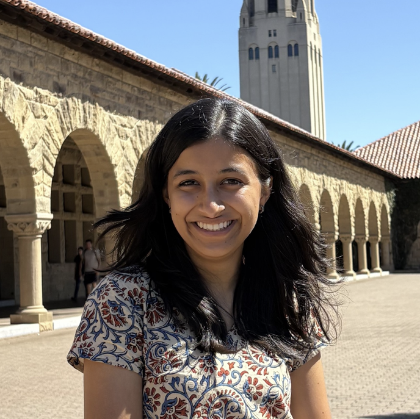

CS 224R Deep Reinforcement Learning
Spring 2026, Class: Wed, Fri 09:30am-11:00am @ NVIDIA Auditorium
Description:
Humans, animals, and robots faced with the world must make decisions and take actions in the world. Moreover, the decisions they choose affect the world they exist in and those outcomes must be taken into account. This course is about algorithms for deep reinforcement learning – methods for learning behavior from experience, with a focus on practical algorithms that use deep neural networks to learn behavior from high-dimensional observations. Topics will include methods for learning from demonstrations, both model-based and model-free deep RL methods, methods for learning from offline datasets, and more advanced techniques for learning multiple tasks such as goal-conditioned RL, meta-RL, and unsupervised skill discovery. These methods will be instantiated with examples from domains with high-dimensional state and action spaces, such as robotics, visual navigation, and control. This course is complementary to CS234, which neither being a pre-requisite for the other. In comparison to CS234, this course will have a more applied and deep learning focus and an emphasis on use-cases in robotics and language modeling.
Format:
The course will consist of twice weekly lectures, three homework assignments, an in-class midterm exam, and a final project. The lectures will cover fundamental topics in deep reinforcement learning, with a focus on methods that are applicable to domains such as robotics and language modeling The assignments will focus on conceptual questions and coding problems that emphasize these fundamentals. Finally, students will present their projects at a poster session and through a final report at the end of the quarter.
Prerequisites:
Machine learning: CS229 or equivalent is a prerequisite. We will be assuming knowledge of concepts including, but not limited to (stochastic) gradient descent and cross-validation, and pre-requisites such as probability theory, multivariable calculus, and basic linear algebra.
Some familiarity with deep learning: The course will build on deep learning concepts such as backpropagation, convolutional networks, and sequence models such as transformers. The assignments will involve programming in PyTorch. The first week will include a short PyTorch review tutorial.
Some familiarity with reinforcement learning: We will assume some familiarity with the basics of reinforcement learning. For introductory material on RL and Markov decision processes (MDPs), see CS221's lectures on MDPs and RL, or see Chapters 3 and 4 of Sutton & Barto.
Previous Offerings
Staff
Marcel Torne
Head Teaching Assistant
OH: Wed 12 – 2 pm
Location: Huang Basement
Amelie Byun
Course Manager
Anushree Aggarwal
Teaching Assistant
OH: Tue 2 – 4 pm
Location: Huang Basement

Abhijnya Bhat
Teaching Assistant
OH: Tue 6 – 8 pm
Location: Huang Basement
Shengqu Cai
Teaching Assistant
OH: Sun 5 – 7 pm
Location: Virtual
Rahul Chand
Teaching Assistant
OH: Sat 1 – 3 pm
Location: Virtual
Perry Dong
Teaching Assistant
OH: Mon 11 am – 1 pm
Location: Virtual
Max Du
Teaching Assistant
OH: Thu 3 – 5 pm
Location: Huang Basement
Tian Gao
Teaching Assistant
OH: Fri 5 – 7 pm
Location: Huang Basement
Joy He-Yueya
Teaching Assistant
OH: Fri 1 – 3 pm
Location: Huang Basement
Ethan Hsu
Teaching Assistant
OH: Thu 10:30 am – 12:30 pm
Location: Virtual
Joonwon Kang
Teaching Assistant
OH: Thu 7 – 9 pm
Location: Virtual
Yash Kankariya
Teaching Assistant
OH: Thu 5 – 7 pm
Location: Huang Basement
Riya Karumanchi
Teaching Assistant
OH: Tue 12 – 2 pm
Location: Virtual

Tyler Lum
Teaching Assistant
OH: Fri 3 – 5 pm
Location: Huang Basement
Anubha Mahajan
Teaching Assistant
OH: Tue 10 – 12 pm
Location: Huang Basement
Alex Nam
Teaching Assistant
OH: Fri 11 am – 1 pm
Location: Virtual
Ifdita Orney
Teaching Assistant
OH: Thu 1 – 3 pm
Location: Huang Basement
Anikait Singh
Teaching Assistant
OH: Tue 4 – 6 pm
Location: Virtual
Megha Srivastava
Teaching Assistant
OH: Sun 2 – 4 pm
Location: Virtual
Ke Wang
Teaching Assistant
OH: Sat 3 – 5 pm
Location: Virtual
Jonathan Yang
Teaching Assistant
OH: Wed 5 – 7 pm
Location: Virtual
Timeline
| Date | Lecture | Deadlines | Notes & Optional Reading |
|---|---|---|---|
| Week 1 Wed, April 1 |
Lecture Course Intro + Start of MDPs & Imitation | ||
| Week 1 Fri, April 3 |
TA Session PyTorch Tutorial | ||
| Week 1 Fri, April 3 |
Lecture Imitation Learning |
|
|
| Week 2 Wed, April 8 |
Lecture Policy Gradients | ||
| Week 2 Fri, April 10 |
Lecture Actor-Critic Methods |
Due Homework 1
|
|
| Week 3 Wed, April 15 |
Lecture Off-Policy Actor Critic Methods |
|
|
| Week 3 Fri, April 17 |
Lecture Q-learning |
|
|
| Week 3 Fri, April 17 |
TA Session Extra section on Q-learning | ||
| Week 4 Wed, April 22 |
Lecture Offline RL |
Due Project Survey
|
|
| Week 4 Fri, April 24 |
Lecture Reward Learning |
Due Homework 2
Out Homework 3
[PDF, code, template] |
|
| Week 5 Wed, April 29 |
Lecture RL for LLMs: Preference Optimization (Guest Lecture: Archit Sharma) |
|
|
| Week 5 Fri, May 1 |
Lecture RL for LLMs: Reasoning (Guest Lecture: Noam Brown) |
Due Project Proposal
(incl. SFT milestone for default project) |
|
| Week 6 Wed, May 6 |
Lecture Model-Based RL |
|
|
| Week 6 Fri, May 8 |
Lecture Multi-Task and Goal-Conditioned RL |
Due Homework 3 |
|
| Week 7 Mon, May 11 |
Review Session Exam Review Session | ||
| Week 7 Wed, May 13 |
Lecture Meta-RL |
|
|
| Week 7 Fri, May 15 |
Exam In-Class Exam | ||
| Week 8 Wed, May 20 |
Lecture Hierarchical RL and IL |
|
|
| Week 8 Fri, May 22 |
Lecture RL for Robots: Sim-to-Real Transfer (Guest Lecture: Guanya Shi) |
Due Project Milestone
|
|
| Week 9 Wed, May 27 |
Lecture RL for Robots: RL for VLAs | ||
| Week 9 Fri, May 29 |
Lecture Frontiers | ||
| Week 10 Wed, June 3 |
Presentations No Lecture (Poster Session) |
Due Project Poster |
|
| Week 10 Fri, June 5 |
|||
| Week 11 Mon, June 8 |
Due Project Report |
|
Course Calendar
A course calendar with details of lectures, TA sessions, office hours, and miscellaneous course events is available in a variety of formats:
Grading and Course Policies
Homeworks (40%): There are three graded homework assignments. Homework 1 is worth 10% of the grade, while Homework 2 and Homework 3 are each worth 15% of the grade. Assignments will require training neural networks in PyTorch. All assignments are due on Gradescope at 9 pm Pacific Time on the respective due date.
Exam (25%): There's an in-class midterm exam on Friday, May 15 at 9:30 am, which covers course content up until May 8th. We will host an exam review session a few days prior to the exam with details TBA.
- On-campus students. We won't be able to accommodate conflicts since it is during class time, and a missed exam defaults to a zero grade. If you have an emergency (including illness) that means you have to miss an exam, please contact us via staff mailing list. We can't promise to accommodate, but we will see what we can do. Please keep in mind that if you email us on exam day or the night before, the course staff will be busy with exam logistics and we may take a day or two to get back to you.
- CGOE students. Due to the size of this class, we cannot accommodate in-person exams (even if you live near campus) to help with room capacity and staffing for the on-campus students. CGOE students will need to nominate exam monitors for both exams and coordinate the exam process with the CGOE exams team. Please refer to this link for more information on the process. For any additional questions, please reach out to the CGOE exams team.
Project (35%): The course project allows you to apply some of what you have learned to an application or research question of your choosing. The project may be done in groups of 1-3 students. You may choose between a custom final project (where students define a project pertaining to the course topics) and a default project (where students start by implementing a basic LLM RL set-up and try to improve it). Examples of both projects are available here, though the default project has been adjusted since Spring 2025.
Extra Credit (up to 2%): Extra credit will be awarded for outstanding projects and for outstanding Ed participation, at the discretion of the teaching team. The number of outstanding projects, as well as the standard for awarding extra credit for Ed solutions will be determined by the teaching team.
Late Days: You have 5 total late days across homeworks, the project proposal, and the project milestone. Late days are not applicable to the project poster (due to its live nature) and the project report (due to the university grading deadline). You may use a maximum of 2 late days for any single assignment, and assignments received after this will not be graded. Late days used for group project deliverables apply to all members of the group. Once you have used all 5 late days, the penalty is 2% off the final course grade for each additional late day.
- Late days are meant to give you some flexibility when unexpected situations come up (like illness or travel). If something like that happens, you should first use your late days instead of requesting an extension. We do not provide extra accommodations for students who join the course late.
Honor Code and Using AI Tools: Collaboration with other students and AI tools is allowed as part of the problem-solving process. However, unless noted otherwise, we expect students to write down solutions and code independently. Assistance from AI tools is treated analogously to assistance from another person. It is an honor code violation to copy, refer to, or look at written or code solutions from other students, from AI tools, and from previous course offerings, including the use of code autocomplete systems. Furthermore, it is an honor code violation to post your assignment solutions online, such as on a public git repo. For more information, see The Stanford Honor Code, The Stanford Honor Code Pertaining to CS Courses, and the Generative AI Policy Guidance.
Academic Accommodations
Students who may need academic accommodations based on the impact of a disability should initiate the request with the Office of Accessible Education (OAE) and notify us as soon as possible (no later than the add-drop deadline). It is the student's responsibility to reach out to the course staff regarding their accommodations on exams and assignments in advance. Please email letters to cs224r-staff-spr2526@cs.stanford.edu.
General Guidelines:
- Contact the OAE to obtain an official accommodation letter if you have a health condition that may impact your coursework.
- Only accommodations explicitly stated in your current OAE letter will be accommodated. If you need additional or revised accommodations, you must request an updated letter from the OAE.
- The teaching team will not be able to approve any retroactive accommodation requests.
- If you have any questions or concerns regarding your accommodations, please contact your disability advisor.
Deadlines and Assignments:
- Students with OAE letters must request a separate extension for each assignment (you cannot
auto-apply your OAE extensions to all assignments).
- Please note that we will not be able to apply OAE extensions to the final project poster (due to its live nature) and final project report (due to the university grading deadline).
- Students with the standard OAE extension accommodation must request an extension before the original due date, as it says in your OAE letter. Retroactive extension requests will not be approved.
- The teaching team will only approve what is outlined in the OAE letter. If you have any questions or concerns, please reach out to your OAE advisor.
Exams: If you plan to use your OAE-approved exam accommodations for a specific exam, students must provide their letter and inform the instructor by:
- 10 calendar days prior to midterm date.
You only need to submit your letter once per quarter. For urgent OAE-related accommodation needs that arise after the deadline, please consult your OAE adviser. If you are not yet registered with OAE, contact the office directly at oae-contactus@stanford.edu.
Additional Information
Lecture Attendance: While we do not require lecture attendance, students are encouraged to join the live lecture. If you want to watch the lecture remotely, please see the Panopto tab of Canvas. For those who cannot join the live lectures, lecture recordings will also be available on Canvas shortly following the lecture. Video cameras located in the back of the room will capture the instructor presentations in this course. For your convenience, you can access these recordings by logging into the course Canvas site. These recordings might be reused in other Stanford courses, viewed by other Stanford students, faculty, or staff, or used for other education and research purposes. Note that while the cameras are positioned with the intention of recording only the instructor, occasionally a part of your image or voice might be incidentally captured. If you have questions, please contact a member of the teaching team.
AIWG: This course is participating in the proctoring pilot overseen by the Academic Integrity Working Group (AIWG). The purpose of this pilot is to determine the efficacy of proctoring and develop effective practices for proctoring in-person exams at Stanford. To find more details on the pilot or the working group, please visit the AIWG's webpage.
Note on Financial Aid
All students should retain receipts for books and other course-related expenses, as these may be qualified educational expenses for tax purposes. If you are an undergraduate receiving financial aid, you may be eligible for additional financial aid for required books and course materials if these expenses exceed the aid amount in your award letter. For more information, review your award letter or visit the Student Budget website.
© Chelsea Finn 2026